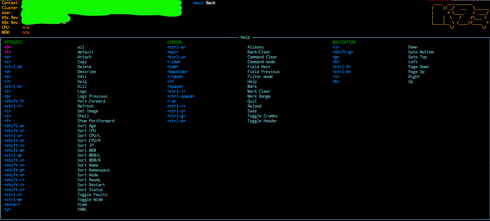

I use kubenetes regularly, and most of the time I cannot remember what command
to run let say to open shell into a container or to list the current containers and so.
kubectl command is very powerful but also very very verbose :)
k9s is the perfect tool for me as it make these command super easy to run the following (and much more) with one keystoke:
- Open a shell in a container.
- Show the logs of a container.
- where can you find all the shortcut.
- …
Install k9s 🔗
# via homebrew
brew install derailed/k9s/k9s
Linux and Windows are supported, check k9s installation page for what needs to be done
Configure your kubernetes context (kubeconfig) 🔗
In order to connect to you kubernetes cluster, you will need a kubeconfig file that most of the time will
live in ~/.kube/config.
As an AWS user, I’m going to use aws cli to create this file for me.
aws eks --region <region-code> update-kubeconfig --name <cluster_name>
For more info, check AWS guide to create kubeconfig
Run k9s 🔗
# run k9s from the command line
k9s
You should see k9s ui.

How to open a shell inside a container 🔗
Once you select your running container, hit s button and Voila!

List of shortcuts 🔗
- Shell:
s - Logs:
l - Describe:
d - Attach:
a - Delete:
ctrl-d - Edit:
e - Help:
? - Kill:
ctrl-k - Logs previous:
p - Port-Forward:
shift-f - Show PortForward:
f - YAML:
y
These commands can change in the future, there are available on the top left of the ui in case you need them :)

To get the complete list of shortcuts, hit ? to go into the help section
